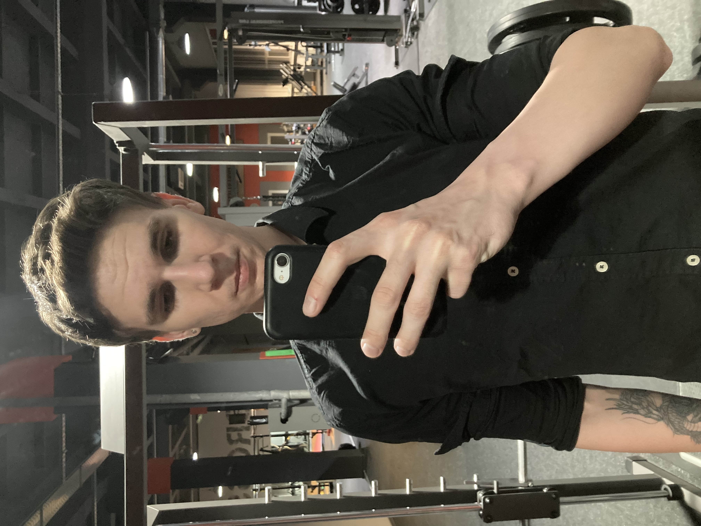

Привіт Світ, це моє резюме!

Про себе
Мене звуть Микита Кучеров, 22.
Проживаю у місті Запоріжжя.
Попереднього серйозного досвіду у АйТі не маю, окрім того що вивчав моделювання 3D графіки, але не реалізувався у цій сфері.
Освіта:
За фахом філолог.
Хоббі:
Дуже полюбляю ходити до тренажерного залу та слухати різноманітну музику.
Обрав саме Фронт Енд, тому що підказали спробувати так як я займався 3D графікою, а це те що бачить замовник перш всьго, як у Фронт Енді.
Мої дані:
EN